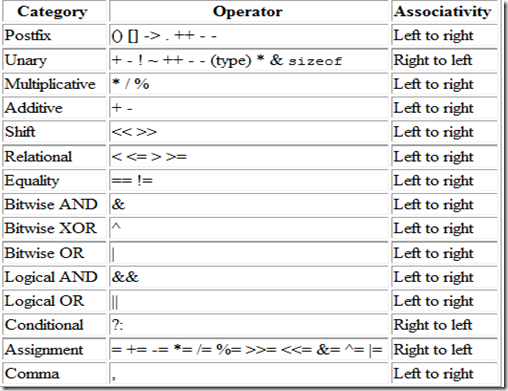

Programming languages typically support a set of operators: constructs which behave generally like functions, but which differ syntactically or semantically from usual functions. Common simple examples include arithmetic (addition with +, comparison with >) and logical operations (such as AND or &&). More involved examples include assignment (usually = or :=), field access in a record or object (usually .), and the scope resolution operator (often ::). Languages usually define a set of built-in operators, and in some cases allow user-defined operators.
 Home